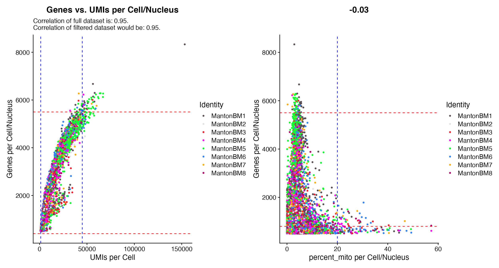

QC Plots
One of the first steps in all scRNA-seq analyses is performing a number of QC checks and plots so that data can be appropriately filtered. scCustomize contains a number of functions that can be used to quickly and easily generate some of the most relevant QC plots.
For this tutorial, I will be utilizing HCA bone marrow cell data from the SeuratData package.
library(tidyverse)
library(patchwork)
library(Seurat)
library(scCustomize)
library(qs)
# Load Example Dataset
hca_bm <- hcabm40k.SeuratData::hcabm40k
# Add pseudo group variable just for this vignette
hca_bm@meta.data$group[hca_bm@meta.data$orig.ident == "MantonBM1" | hca_bm@meta.data$orig.ident ==
"MantonBM2" | hca_bm@meta.data$orig.ident == "MantonBM3" | hca_bm@meta.data$orig.ident == "MantonBM4"] <- "Group 1"
hca_bm@meta.data$group[hca_bm@meta.data$orig.ident == "MantonBM5" | hca_bm@meta.data$orig.ident ==
"MantonBM6" | hca_bm@meta.data$orig.ident == "MantonBM7" | hca_bm@meta.data$orig.ident == "MantonBM8"] <- "Group 2"Add Mitochondrial and Ribosomal Gene Percentages
scCustomize contains easy wrapper function to automatically add both Mitochondrial and Ribosomal count percentages to meta.data slot. If you are using mouse, human, or marmoset data all you need to do is specify the species parameter.
# These defaults can be run just by providing accepted species name
hca_bm <- Add_Mito_Ribo_Seurat(seurat_object = hca_bm, species = "Human")NOTE: There is analogous function for LIGER objects (see: Add_Mito_Ribo_LIGER) but QC plotting functions currently only support Seurat objects.
list_species_names = TRUE.
| Mouse_Options | Human_Options | Marmoset_Options | Zebrafish_Options | Rat_Options |
|---|---|---|---|---|
| Mouse | Human | Marmoset | Zebrafish | Rat |
| mouse | human | marmoset | zebrafish | rat |
| Ms | Hu | CJ | DR | RN |
| ms | hu | Cj | Dr | Rn |
| Mm | Hs | cj | dr | rn |
| mm | hs | NA | NA | NA |
However custom prefixes can be used for non-human/mouse/marmoset species with different annotations. Simply specify species = other and supply feature lists or regex patterns for your species of interest.
NOTE: If desired please submit issue on GitHub for additional default species. Please include regex pattern or list of genes for both mitochondrial and ribosomal genes and I will add additional built-in defaults to the function.
# Using gene name patterns
hca_bm <- Add_Mito_Ribo_Seurat(seurat_object = hca_bm, species = "other", mito_pattern = "regexp_pattern",
ribo_pattern = "regexp_pattern")
# Using feature name lists
mito_gene_list <- c("gene1", "gene2", "etc")
ribo_gene_list <- c("gene1", "gene2", "etc")
hca_bm <- Add_Mito_Ribo_Seurat(seurat_object = hca_bm, species = "other", mito_features = mito_gene_list,
ribo_features = ribo_gene_list)
# Using combination of gene lists and gene name patterns
hca_bm <- Add_Mito_Ribo_Seurat(seurat_object = hca_bm, species = "Human", mito_features = mito_gene_list,
ribo_pattern = "regexp_pattern")Plotting QC Metrics
scCustomize has a number of quick QC plotting options for ease of use.
NOTE: Most scCustomize plotting functions contain ... parameter to allow user to supply any of the parameters for the original Seurat function that is being used under the hood.
VlnPlot-Based QC Plots
scCustomize contains 4 functions which wrap Seurat::VlnPlot().
-
QC_Plots_GenesPlots genes per cell/nucleus. -
QC_Plots_UMIsPlots UMIs per cell/nucleus.
-
QC_Plots_MitoPlots mito% (named “percent_mito”) per cell/nucleus. -
QC_Plots_FeaturePlots “feature” per cell/nucleus. Using parameterfeatureto allow plotting of any applicable named feature in object@meta.data slot.
scCustomize functions have the added benefit of:
- Feature to plot set by default (except for
QC_Plots_Feature). - Added high/low cutoff parameters to allow for easy visualization of potential cutoff thresholds.
# All functions contain
p1 <- QC_Plots_Genes(seurat_object = hca_bm, low_cutoff = 800, high_cutoff = 5500)
p2 <- QC_Plots_UMIs(seurat_object = hca_bm, low_cutoff = 1200, high_cutoff = 45000)
p3 <- QC_Plots_Mito(seurat_object = hca_bm, high_cutoff = 20)
wrap_plots(p1, p2, p3, ncol = 3)
Additional parameters
In addition to being able to supply Seurat parameters with ... these plots like many others in scCustomize contain other additional parameters to customize plot output without need for post-plot ggplot2 modifications
-
plot_title: Change plot title -
x_axis_label/y_axis_label: Change axis labels. -
x_lab_rotate: Should x-axis label be rotated 45 degrees? -
y_axis_log: Should y-axis in linear or log10 scale.
p1 <- QC_Plots_UMIs(seurat_object = hca_bm, low_cutoff = 1200, high_cutoff = 45000, pt.size = 0.1)
p2 <- QC_Plots_UMIs(seurat_object = hca_bm, low_cutoff = 1200, high_cutoff = 45000, pt.size = 0.1,
y_axis_log = TRUE)
wrap_plots(p1, p2, ncol = 2)
Setting y_axis_log can be very helpful for initial plots where outliers skew the visualization of the majority of the data without excluding data by setting y-axis limit.
FeatureScatter-Based QC Plots
scCustomize contains 3 functions which wrap Seurat::FeatureScatter() with added visualization of potential cutoff thresholds and some additional functionality:
-
QC_Plot_UMIvsGenePlots genes vs UMIs per cell/nucleus -
QC_Plot_GenevsFeaturePlots Genes vs. “feature” per cell/nucleus. Using parameterfeature1to allow plotting of any applicable named feature in object@meta.data slot.
-
QC_Plot_UMIvsFeaturePlots UMIs vs. “feature” per cell/nucleus. Using parameterfeature1to allow plotting of any applicable named feature in object@meta.data slot.
New/Modified functionality
- Better default color palettes
-
shuffle = TRUEby default to prevent hiding of datasets - Ability to set & visualize potential cutoff thresholds (similar to VlnPlot based QC Plots above)
- Report potential post filtering correlation in addition to whole dataset correlation when using
QC_Plot_UMIvsGene(based on values provided to high and low cutoff parameters)
# All functions contain
QC_Plot_UMIvsGene(seurat_object = hca_bm, low_cutoff_gene = 800, high_cutoff_gene = 5500, low_cutoff_UMI = 500,
high_cutoff_UMI = 50000)
QC_Plot_GenevsFeature(seurat_object = hca_bm, feature1 = "percent_mito", low_cutoff_gene = 800,
high_cutoff_gene = 5500, high_cutoff_feature = 20)
Color data by continuous meta data variable
QC_Plot_UMIvsGene contains the ability to color points by continuous meta data variables.
This can be used to plot % of mito reads in addition to UMI vs. Gene comparisons
QC_Plot_UMIvsGene(seurat_object = hca_bm, meta_gradient_name = "percent_mito", low_cutoff_gene = 800,
high_cutoff_gene = 5500, high_cutoff_UMI = 45000)
QC_Plot_UMIvsGene(seurat_object = hca_bm, meta_gradient_name = "percent_mito", low_cutoff_gene = 800,
high_cutoff_gene = 5500, high_cutoff_UMI = 45000, meta_gradient_low_cutoff = 20)
QC_Plot_UMIvsGene() when using meta_gradient_name outputs plot colored by meta data variable (left) to view only points above potential cutoff meta_gradient_low_cutoff can be specified to alter the plotting (right).
Combination Plots
If you are interested in viewing QC_Plot_UMIvsGene both by discrete grouping variable and by continuous variable without writing function twice you can use combination = TRUE and plot output will contain both plots.
QC_Plot_UMIvsGene(seurat_object = hca_bm, meta_gradient_name = "percent_mito", low_cutoff_gene = 800,
high_cutoff_gene = 5500, high_cutoff_UMI = 45000, meta_gradient_low_cutoff = 20, combination = TRUE)
QC_Plot_UMIvsGene() when using combination = TRUE will output both the Gene x UMI by active identity and with meta data gradient coloring.
Analyze Median QC Values per Sample/Library
scCustomize also contains a few helpful functions for returning and plotting the median values for these metrics on per sample/library basis.
Calculate Median Values & Return data.frame
scCustomize contains function Median_Stats to quickly calculate the medians for basic QC stats (Genes/, UMIs/, %Mito/Cell, etc) and return a data.frame.
median_stats <- Median_Stats(seurat_object = hca_bm, group_by_var = "orig.ident")| orig.ident | Median_nCount_RNA | Median_nFeature_RNA | Median_percent_mito | Median_percent_ribo | Median_percent_mito_ribo |
|---|---|---|---|---|---|
| MantonBM1 | 2634.5 | 807 | 3.928074 | 42.04921 | 46.43790 |
| MantonBM2 | 2462.5 | 783 | 3.556994 | 42.96184 | 46.87269 |
| MantonBM3 | 2617.0 | 769 | 3.301410 | 40.65558 | 44.10722 |
| MantonBM4 | 2264.0 | 780 | 3.384891 | 33.73245 | 37.96850 |
| MantonBM5 | 2677.0 | 741 | 3.265677 | 41.55203 | 45.33713 |
| MantonBM6 | 2677.0 | 835 | 3.202053 | 43.07874 | 46.70119 |
| MantonBM7 | 2429.0 | 732 | 3.216184 | 44.68831 | 48.20765 |
| MantonBM8 | 2453.0 | 701 | 3.697331 | 44.97911 | 48.96420 |
| Totals (All Cells) | 2524.0 | 769 | 3.447040 | 41.53183 | 45.40989 |
The Median_Stats function has some column names stored by default but will also calculate medians for additional meta.data columns using the optional median_var parameter
median_stats <- Median_Stats(seurat_object = hca_bm, group_by_var = "orig.ident", median_var = "meta_data_column_name")Plotting Median Values
scCustomize also contains a few functions to plot some of these median value calculations, which can be used on their own without need to return data.frame first.
-
Plot_Median_Genes
-
Plot_Median_UMIs
-
Plot_Median_Mito
-
Plot_Median_Other- Used to plot any other numeric variable present in object meta.data slot.
Plot_Median_Genes(seurat_object = hca_bm, group_by = "group")
Plot_Median_UMIs(seurat_object = hca_bm, group_by = "group")
Plot_Median_Mito(seurat_object = hca_bm, group_by = "group")
Plot_Median_Other(seurat_object = hca_bm, median_var = "percent_ribo", group_by = "group")